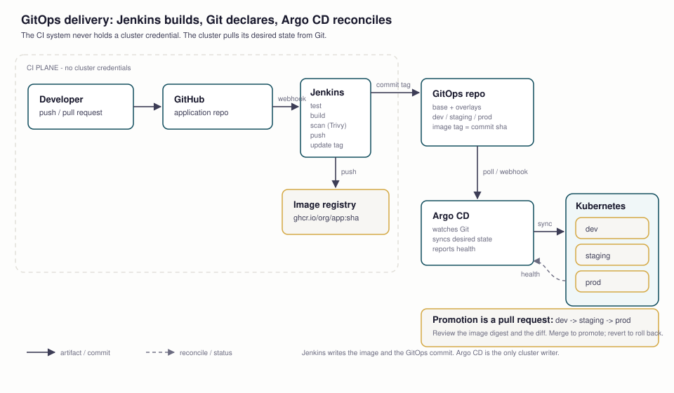

Kubernetes GitOps: Jenkins Builds, Git Declares, Argo CD Reconciles
Continuous integration and continuous delivery are two different jobs. Jenkins should build, test, scan and push an image — then stop. The cluster should read its desired state from Git and reconcile itself. That split is the whole point of GitOps: the CI system never holds a cluster credential, and every deployment is a reviewable commit.
git revert instead of a kubectl command.
Part 1 — Two planes, one source of truth

- Developer opens a pull request against the application repository.
- GitHub runs the PR checks and, on merge, notifies Jenkins through a webhook.
- Jenkins checks out the commit, runs tests, builds the image, scans it and pushes an immutable tag to the registry.
- Jenkins commits the new image tag to the GitOps repository — that is the deployment request.
- Argo CD watches the GitOps repository and compares it with the live cluster.
- Argo CD applies the difference to Kubernetes and reports health.
- Promotion is a pull request from one environment overlay to the next; rollback is a revert of the commit that introduced the bad image.
| component | credentials it needs | what it may write |
|---|---|---|
| Jenkins | registry push token, GitOps repo write token | images and Git commits — no kubeconfig |
| Argo CD | cluster sync role, GitOps repo read | Kubernetes resources in allowed namespaces |
| Developer | app repo write, GitOps repo PR | code and desired-state PRs, never a direct prod sync |
| Registry | push from CI, pull from cluster | image layers and tags |
Why this is safer, not just tidier: a compromised CI job can push an image and a Git commit, but it cannot delete a namespace, read a cluster secret, or run kubectl. The blast radius is two repositories and one registry. The cluster trusts one reconciler, and every change has a commit author, a diff and a revert path.
Part 2 — The two repositories
Keep the application and the desired state apart. They have different reviewers, different change rates and different permissions.
app-repo/
├─ src/ application code
├─ tests/
├─ Dockerfile
└─ Jenkinsfile CI only
gitops-repo/
├─ base/
│ ├─ deployment.yaml
│ ├─ service.yaml
│ └─ kustomization.yaml
└─ overlays/
├─ dev/
│ ├─ kustomization.yaml image tag + replicas
│ └─ patch.yaml
├─ staging/
└─ prod/The image tag is the deployment artifact. Pin an immutable value — the commit SHA or the image digest — never latest:
# overlays/dev/kustomization.yaml
resources:
- ../../base
images:
- name: ghcr.io/acme/document-copilot
newTag: 4f2c1a9d7e6bA tag is a pointer; a digest is the exact bytes. For production, record the digest in the overlay or let the promotion step copy it, so a re-tagged image cannot silently change what is running.
Why separate repos? The app repo can be public or broadly writable; the GitOps repo can be private and protected. CI gets write access only to the GitOps repo, not the cluster. Promotion becomes a pull request with a diff, approvals and history. A monorepo can work, but the permission boundary is weaker and the CI token now has a path to production manifests.
Part 3 — Jenkins: build, scan, push, commit
The pipeline has one job that matters at the end: update the GitOps tag. It does not run kubectl apply.
pipeline {
agent any
environment {
IMAGE = "ghcr.io/acme/document-copilot"
TAG = "${env.GIT_COMMIT.take(12)}"
}
stages {
stage('Checkout') { steps { checkout scm } }
stage('Test') {
steps {
sh 'uv sync --frozen'
sh 'uv run pytest -q'
sh 'uv run ruff check .'
}
}
stage('Build') {
steps { sh "docker build -t ${IMAGE}:${TAG} ." }
}
stage('Scan') {
steps {
sh "trivy image --exit-code 1 --severity HIGH,CRITICAL ${IMAGE}:${TAG}"
}
}
stage('Push') {
steps {
withCredentials([usernamePassword(
credentialsId: 'ghcr-push',
usernameVariable: 'REG_USER',
passwordVariable: 'REG_PASS'
)]) {
sh 'echo "$REG_PASS" | docker login ghcr.io -u "$REG_USER" --password-stdin'
sh "docker push ${IMAGE}:${TAG}"
}
}
}
stage('Update GitOps') {
steps {
withCredentials([sshUserPrivateKey(
credentialsId: 'gitops-deploy-key',
keyFileVariable: 'GITOPS_KEY'
)]) {
sh '''
git clone git@github.com:acme/gitops.git
cd gitops
(cd overlays/dev && kustomize edit set image \
ghcr.io/acme/document-copilot=ghcr.io/acme/document-copilot:${TAG})
git config user.name "jenkins"
git config user.email "jenkins@acme.test"
git commit -am "deploy document-copilot ${TAG}"
git push origin main
'''
}
}
}
}
}Credential notes: use a registry token scoped to push, and a deploy key scoped to the GitOps repository. Jenkins has no kubeconfig, no cluster role and no cloud admin role. If a build step needs to read a secret, inject only that secret into that stage. The agent image needs Docker (or BuildKit), Trivy, Kustomize and Git; pin that image like any other dependency.
Triggering: a GitHub webhook on pushes to main; pull requests run the same test and build stages but skip Push and Update GitOps. Use ephemeral agents (the Jenkins Kubernetes plugin) so a build cannot poison the controller.
GitHub Actions is the same design with a different runner: docker/build-push-action, trivy-action, then a commit to the GitOps repo. Jenkins is not the architecture; the split is.
Part 4 — Argo CD: the only cluster writer
Install Argo CD into its own namespace:
kubectl create namespace argocd
kubectl apply -n argocd -f \
https://raw.githubusercontent.com/argoproj/argo-cd/stable/manifests/install.yaml
kubectl -n argocd port-forward svc/argocd-server 8080:443
argocd admin initial-password -n argocdThen declare the application. This is the object that watches Git and reconciles the cluster:
apiVersion: argoproj.io/v1alpha1
kind: Application
metadata:
name: document-copilot-dev
namespace: argocd
spec:
project: default
source:
repoURL: https://github.com/acme/gitops.git
targetRevision: main
path: overlays/dev
destination:
server: https://kubernetes.default.svc
namespace: document-copilot-dev
syncPolicy:
automated:
prune: true # remove resources deleted from Git
selfHeal: true # revert manual drift
syncOptions:
- CreateNamespace=trueWhat selfHeal means: if someone edits a deployment with kubectl, Argo CD notices the live state no longer matches Git and reverts it. Drift becomes a signal, not a new normal. prune is the other half: deleting a manifest deletes the resource. Both are powerful; both deserve a review and a non-production rehearsal first.
For several environments, use an ApplicationSet with a list or Git generator, or one Application per overlay. Keep the source path and destination namespace explicit; do not let a single app sync every environment with a floating branch.
Part 5 — Promotion and rollback without kubectl
| environment | sync | approval |
|---|---|---|
| dev | automatic on every GitOps commit | none |
| staging | automatic after the promotion PR merges | one reviewer, CI green |
| prod | manual sync or a sync window | PR approval + release owner |
Promotion is not a Jenkins job copying files. It is a pull request that changes the image tag in the next overlay:
# promote the exact image that passed staging
git checkout -b promote/document-copilot-4f2c1a9
# edit overlays/staging/kustomization.yaml (or prod) to the tested digest
git commit -am "promote document-copilot 4f2c1a9 to staging"
git push -u origin promote/document-copilot-4f2c1a9
# open the PR, review the diff, merge; Argo CD syncsRollback is the same mechanism in reverse:
git revert <bad-deploy-commit>
git push origin main
argocd app history document-copilot-prod
argocd app wait document-copilot-prod --healthDo not “fix” production with kubectl rollout undo or a hot edit. That creates drift Argo CD will revert, and it leaves no reviewed history. Revert the commit; the cluster follows Git. If the bad image is already running, the revert is still the audit trail — pair it with an incident note.
Part 6 — Security and operations
- Secrets: never commit plaintext. Use External Secrets Operator to pull from a vault/cloud secret manager, or Sealed Secrets if you want encrypted secrets in Git. The app reads a Kubernetes Secret; the pipeline never sees it.
- Supply chain: scan with Trivy, generate an SBOM (Syft), sign with cosign, and admit only signed images with Kyverno or OPA Gatekeeper. Scanning without admission is advice, not a control.
- Least privilege: Jenkins gets registry push + GitOps repo write; Argo CD gets a namespace-scoped sync role. Use Argo CD Projects and Kubernetes RBAC to bound each application.
- Policy: Pod Security Standards, resource limits, NetworkPolicies, and a deny-by-default egress policy are the baseline for a production namespace.
- Observability: Argo CD health is not application health. Add readiness/liveness probes, Prometheus metrics, logs and alerts; a green sync with a failing app is still an outage.
- Notifications: Argo CD Notifications or your CI chat integration for sync failures and degraded health; a silent pipeline is a failed pipeline.
Part 7 — A local rehearsal
You do not need a cloud cluster to learn the shape. A local kind cluster plus Argo CD is enough for the CD half; Jenkins can run in Docker or you can substitute GitHub Actions while you learn.
kind create cluster --name gitops
kubectl create namespace argocd
kubectl apply -n argocd -f \
https://raw.githubusercontent.com/argoproj/argo-cd/stable/manifests/install.yaml
# a GitOps repo you control, with overlays/dev pointing at a public image
kubectl apply -f application-dev.yaml
argocd app get document-copilot-dev
argocd app sync document-copilot-devUse the document-copilot skeleton as the application: finish the FastAPI backend through lesson 15's workflow, containerize it, push one image, and let Argo CD deploy it to a dev namespace. The first sync is the lesson; changing the tag in Git and watching Argo CD reconcile is the second.
Part 8 — Failure modes, by stage
| symptom | stage | first check |
|---|---|---|
ImagePullBackOff | registry / pull secret | image tag exists; namespace has the pull secret; registry auth |
CrashLoopBackOff | application | logs, missing env/secret, readiness probe, command |
Argo CD OutOfSync but no sync | sync policy / RBAC | auto-sync enabled? project allows the namespace? diff in UI |
ComparisonError | manifest / CRD | invalid YAML, missing CRD, unsupported field |
| Jenkins cannot push | credentials | token scope, registry login, branch protection on GitOps |
| Webhook never fires | GitHub → Jenkins | delivery log, URL reachability, secret/token |
| Prod changes by hand keep reverting | Argo CD selfHeal | that is the feature; make the change in Git |
| Same tag, different behavior | tag immutability | use a digest; never overwrite a tag; rebuild with a new SHA |
Part 9 — The checklist
- Two repos: application + GitOps; branch protection on both.
- Jenkins credentials: registry push, GitOps deploy key. No kubeconfig.
- Image tag: commit SHA or digest, never
latest. - Pipeline: test → build → scan → push → update overlay → commit.
- Argo CD: one Application per environment;
prune/selfHealdeliberate. - Promotion: PR per environment; prod sync window/approval.
- Secrets: ESO or Sealed Secrets; no plaintext in Git.
- Supply chain: Trivy + SBOM + cosign + admission policy.
- Health: probes, metrics, logs, Argo CD notifications.
- Rollback rehearsed:
git revert→ Argo sync → health check.
Check yourself
Primary sources for this lesson
Kubernetes documentation for Deployments, Services, namespaces, probes and RBAC. Argo CD documentation for Applications, sync policies, health and projects; Kustomize for overlays and image overrides. Jenkins Pipeline for the declarative Jenkinsfile and credentials binding.
Supply chain and secrets: Trivy for image scanning, cosign for signing, External Secrets Operator and Sealed Secrets. For the cluster bootstrap, kind is enough for the local rehearsal.
What's next
The delivery loop is now closed: code, image, desired state, cluster, health. Lesson 17 puts every layer to work in the capstone — a Supabase + pgvector filing analyst with hybrid retrieval, a PydanticAI agent, a fail-closed grounding contract, a citation UI, and a phased AI-coding workflow whose open gates stay visible. After that, the skill map lists the whole course in order, and lesson 1 is the way back to the start.